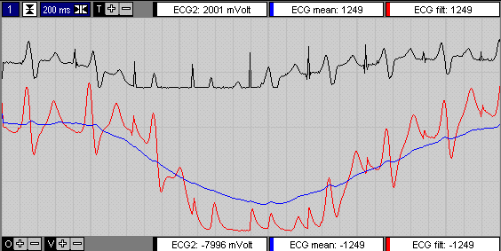
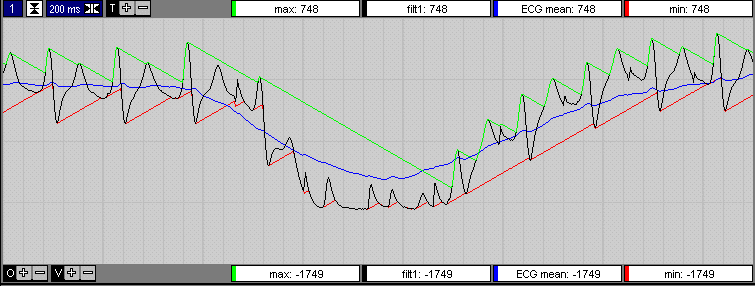
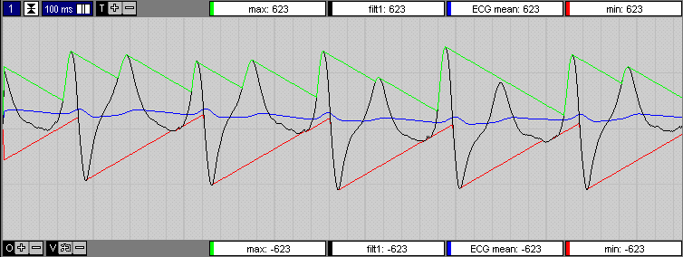
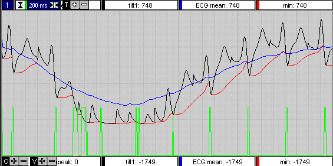
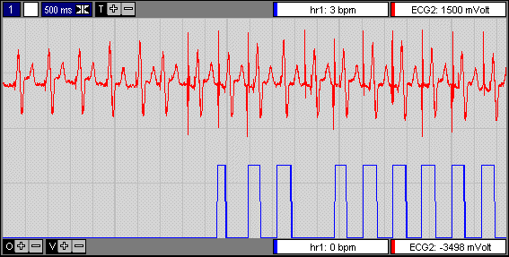
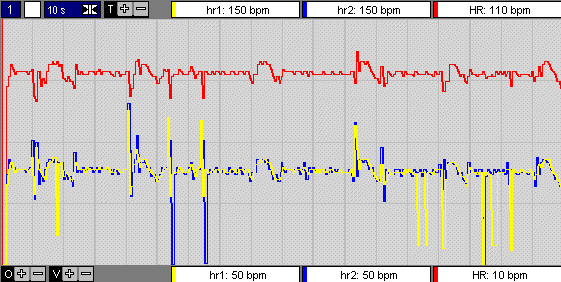

RF 2, Onset Systolische Bloeddruk
|
Eerdere ECG functies: 1
Dit is zeer robuste hartrate detector (dus veel rekentijd), minder geschikt voor snelle realtime applicaties.
Deze detector is ook geschikt voor pacemaker patienten en heeft een automatische up/down detectie van de R-top.
- bepaalt HR op basis van RR en SS interval en geeft als resultaat de beste van beide
- detecteert pacemaker pulsen (beschikbaar als uitgang)
- geeft huidige en vorige RR-interval (inclusief valid-signaal) t.b.v. RR-scatter diagram
- begrenzing op minimale en maximale hartrate
PacePuls uitgang geeft een puls=1 vanaf pacemaker puls tot aan eerstvolgende S-top (het signaal is vertraagd als gevolg van de filtering).
RR1, RR2 en RR-valid zijn speciaal bedoeld voor weergave van het RR-scatter diagram.
RR1=huidige, RR2=vorige, RR-Valid=1 op moment van nieuwe RR-waarde.
Typische kenmerken
- Q-top ontbreekt
- T-top vaak even hoog als R-top
- als pacemaker actief, sterker, smalle pacepulsen
- afleiding 2 bevat de best detecteerbare informatie
alfa1:=2*pi*lf1/sample_frequency;
alfa2:=alfa1/20;
lf2:=alfa2*lf1/alfa1;
delay:=round(sample_frequency/(10*lf2));
if delay>funk_41_delay_maxn then delay:=funk_41_delay_maxn;
{bereken gefilterde signalen}
{smooth1 is een gefilterd signaal,
waarbij de eventuele pacepulsen sterk zijn onderdrukt}
smooth1:=alfa1*input1+(1-alfa1)*smooth1;
{smooth2 is zeer zwaar gefilterd, teneinde een mean te krijgen}
smooth2:=alfa2*input1+(1-alfa2)*smooth2;
delay_ar[delay_arp]:=round(smooth1);
delay_arp:=(delay_arp+1) mod delay;
filter voor mean berekening fm=fc/20
delay = fs / (10 * fm)
standaard filter fc=3Hz
(2 Hz werkt nog redelijk, 1 Hz is duidelijk te laag)

if delay_ar[delay_arp]>max1 then max1:=delay_ar[delay_arp] else max1:=max1-1.2;
if delay_ar[delay_arp]<min1 then min1:=delay_ar[delay_arp] else min1:=min1+1.2;


Voor een goede top-detectie moet na de detectie van een extremum gezocht worden in de richting van het gemiddelde via een soort omgekeerde e-macht. Dat wil zeggen in het begin langzaam, naarmate de tijd verstrijkt moet sneller in de richting van het gemiddelde gelopen worden. Dit garandeert een goede convergentie ook nadat een storing is opgetreden. Een verdere verbetring kan bereikt worden door de convergentie snelheid eveneens te laten afhangen van het verschil tussen convergentielijn en het momentane signaal. Naast onderstaande methode is een kwadratische convergentie geprobeerd, welke minder goed blijkt te werken.
Gekozen is uiteidelijk voor het onderstaande convergentie algoritme, telkens als een extremum wordt gevonden, wordt de tijd op 0 gezet. Uiteraard wordt de convergentielijn geclipt op het gemiddelde.
min:=min+(signaal-min)*tijd*0.02/sample_frequency
In onderstaand plaatje is als factor 0.04 gebruikt, teneinde de werking van het algoritme explicieter te laten uitkomen.

Bepaling van de hartrate
Beschreven voor de S-top (bepaling 1), dezelfde berekening gebeurt ook voor de R-top (bepaling 2)
Na filtering is de S-top het meest karakteristiek.
Daarom is in het volgende algoritme toegepast de S-top als beslissings kriterium toegepast. Als extra filtering wordt het gemiddelde van RR en SS interval genomen.
state=0 : initiele toestand, wacht op s-top
als s-top gevonden, initialiseer tellers en ga naar state=1
state=1 : verhoog tellers (RR2, SS) en wacht op R-top
als R-top gevonden, oude RR interval bewaren RR1:=RR2 en nieuwe RR-interval resetten RR2:=0 en ga naar state=2
state=2 : wacht op S-top
als S-top gevonden, dan HR bepalen HR=(RR1+SS)/2 en SS-interval resetten SS:=0 en terug naar state=1
als R-top gevonden, oude RR-interval ophogen RR1:=RR1+RR2 en nieuwe RR-interval resetten RR2:=0

Bij gezonde personen verdient het aanbeveling de hartrate te detecteren met nadruk op de R-top, immers dit is de sterkste en steilste piek. Bij sommige pacemaker patienten is echter de S-top het meest geschikt. Indien bij gezonde personen de electroden verkeerd om worden aangesloten is ook de neerwaartse piek het meest sprekend (overeenkomend met S-top benadrukking).
Daarom is gekozen om beide methoden continue te berekenen en vervolgens de beste te selecteren.

De gele hartrate curve is bepaald met nadruk op de S-toppen, de blauwe hartrate curve met nadruk op de R-toppen. Continue worden beide hartrates bepaald en hun gemiddelde bijgehouden. De hartrate die momentaan de kleinste afstand tot zijn eigen gemiddelde heeft wordt als werkelijke hartrate (rode curve, enigszins naar boven geschoven) gebruikt.
Voorbeeld, bij bovenstaande instelling 
|
1 = Signaal |
ingangssignaal dat gebruikt wordt als trigger voor de diverse teksten. |
|
1 = New Text |
normaal=0, zodra tekst wordt vernieuwd gedurende 1 sample 1 |
1 = frequentie laagdoorlaat filter
2 = hartrate minimaal
3 = hartrate maximaal
4 = pacepuls treshold
© Instrumentele Dienst. Bijgewerkt op 8-12-1999.